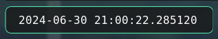

Advanced examples
Let's build something complex with what oatbar has to offer.
Combination of variables, visibility control and programmatic access to variables via oatctl var provides
tremendous power.
In these examples oatctl var is often called from on_mouse_left handlers, but you
can use it in your WM keybindings too.
Workspace customizations
If you have enabled oatbar-desktop command, you should have access to the ${desktop:workspace.value}
variable.
[[command]]
name="desktop"
command="oatbar-desktop"
See which values it can have via oatctl var ls | grep desktop when running oatbar. You can use
this to set any properties of your block, including appearance and visibility.
Appearance
In this example, the bar on workspace two is a bit more red than usual.
[[var]]
name="default_block_bg"
value="${desktop:workspace.value}"
replace_first_match=true
replace=[
["^two$","#301919e6"],
[".*", "#191919e6"],
]
[[default_block]]
background="${default_block_bg}"
Visibility
This block shown only on workspace three.
[[block]]
show_if_matches=[["${desktop:workspace.value}", "^three$"]]
Menu
oatbar does not know anything about menus, but let's build one.


[[bar]]
blocks_left=["L", "menu", "launch_chrome", "launch_terminal", "R"]
[[default_block]]
background="#191919e6"
[[default_block]]
name="menu_child"
background="#111111e6"
line_width=3
overline_color="#191919e6"
underline_color="#191919e6"
show_if_matches=[["${show_menu}","show"]]
[[block]]
name='menu'
type = 'text'
value = "${show_menu}"
replace = [
["^$", "circle-right"],
["show", "circle-left"],
["(.+)","<span font='IcoMoon-Free 12' weight='bold' color='#53e2ae'>$1</span>"],
]
on_mouse_left = "oatctl var rotate show_menu right '' show"
[[block]]
name='launch_chrome'
type = 'text'
inherit="menu_child"
value = "<span font='IcoMoon-Free 12'></span> "
on_mouse_left = "oatctl var set show_menu ''; chrome"
[[block]]
name='launch_terminal'
type = 'text'
inherit="menu_child"
value = "<span font='IcoMoon-Free 12'></span> "
on_mouse_left = "oatctl var set show_menu ''; alacritty"
Let's take a closer look:
- We create a
show_menuvariable that can be empty or set toshow - In
menublock all regexes apply in sequence. - The first two replace it with icon names.
- The last one wraps the icon name into the final Pango markup.
- The
on_mouse_leftrotates the values ofshow_menubetween empty andshow, effectively toggling it. - Blocks are only displayed if
show_menuis set. - Blocks clear
show_menubefore launching the app to hide the menu. - A small cosmetic effect is achieved by inheriting a
default_blockwith a different style.
This example can be extended to build more layers of nesting by introducing additional variables.
Rotating menu
It sometimes useful to always show the main panel, but have an occasional access to additional information. A great idea would be to build a rotating menu.


[[bar]]
blocks_left=["L", "rotate_left", "panel_0", "panel_1", "panel_2", "rotate_right", "R"]
[[block]]
name='rotate_left'
type = 'text'
value = "<span font='IcoMoon-Free 12' color='#53e2ae'>circle-left</span>"
on_mouse_left = "oatctl var rotate rotation_idx left '' 1 2"
[[block]]
name='rotate_right'
type = 'text'
value = "<span font='IcoMoon-Free 12' color='#53e2ae'>circle-right</span>"
on_mouse_left = "oatctl var rotate rotation_idx right '' 1 2"
[[block]]
name='panel_0'
type = 'text'
value = "<span color='yellow'>Panel 0</span>"
show_if_matches=[["${rotation_idx}", "^$"]]
[[block]]
name='panel_1'
type = 'text'
value = "<span color='lime'>Panel 1</span>"
show_if_matches=[["${rotation_idx}", "1"]]
[[block]]
name='panel_2'
type = 'text'
value = "<span color='deeppink'>Panel 2</span>"
show_if_matches=[["${rotation_idx}", "2"]]
Dynamic image block

This looks like a normal clock, but it is actually loaded from the PNG, that was generated by a custom command. You can display arbitrary graphics!
A program to generate an image:
import datetime
import cairo
import os
import time
import sys
while True:
WIDTH, HEIGHT = 270, 28
sfc = cairo.ImageSurface(cairo.Format.ARGB32, WIDTH, HEIGHT)
ctx = cairo.Context(sfc)
ctx.set_font_size(16)
ctx.select_font_face("Courier", cairo.FONT_SLANT_NORMAL, cairo.FONT_WEIGHT_NORMAL)
ctx.move_to(3, 20)
ctx.set_source_rgb(1.0, 1.0, 1.0)
time_str="%s" % datetime.datetime.now()
ctx.show_text(time_str)
ctx.fill()
output_filename = '/tmp/custom-clock.png'
sfc.write_to_png(output_filename)
print(output_filename)
print(time_str)
sys.stdout.flush()
time.sleep(1)
If run, it would write /tmp/custom-clock.png and print text like this
$ python3 ./book/src/configuration/cookbook/custom-clock.py
/tmp/custom-clock.png
2024-06-30 21:09:22.165792
/tmp/custom-clock.png
2024-06-30 21:09:23.185004
/tmp/custom-clock.png
2024-06-30 21:09:24.195003
[[command]]
name="img-clock"
command="python3 /home/user/Project/oatbar/clock.py"
line_names=["file_name", "ts"]
[[block]]
name = 'image'
type = 'image'
value = '${img-clock:file_name}'
updater_value = '${img-clock:ts}'
The value of img-clock:ts is not important, but because it
changes, the image is not cached. It get's reloaded from
the disk on each update.
This is not the most efficient way to build custom widgets.
It involves writing/reading files from the
disk on each update. Building animations is possible, but
not efficient, which can matter for you if you are on
laptop battery. You can use tmpfs to save on disk writes,
but not so much on CPU cycles.